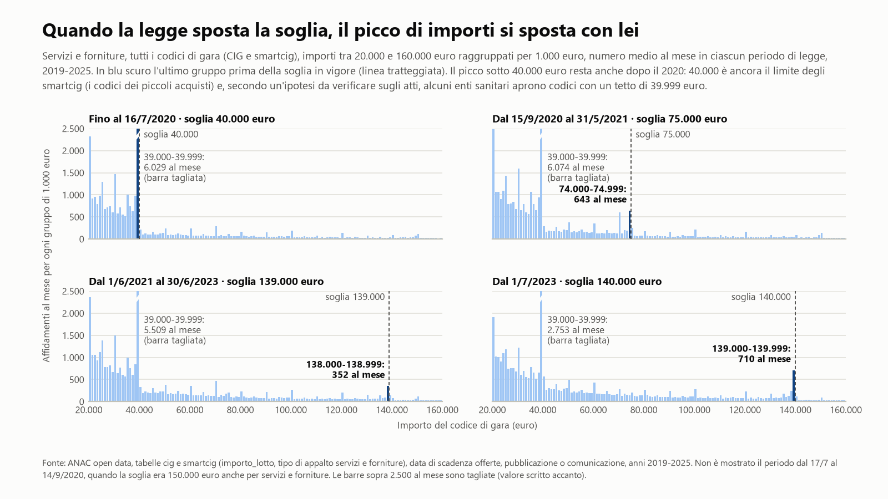
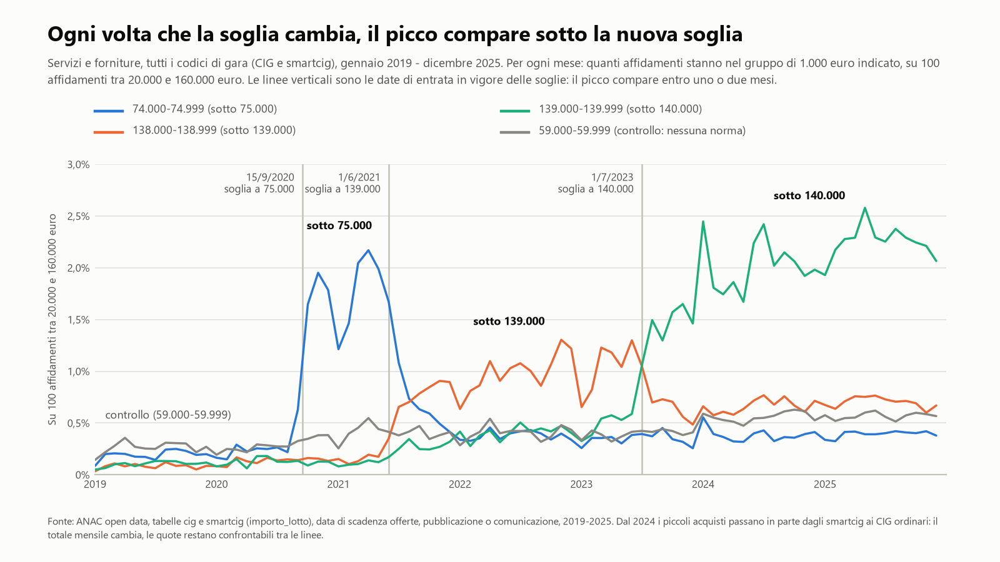
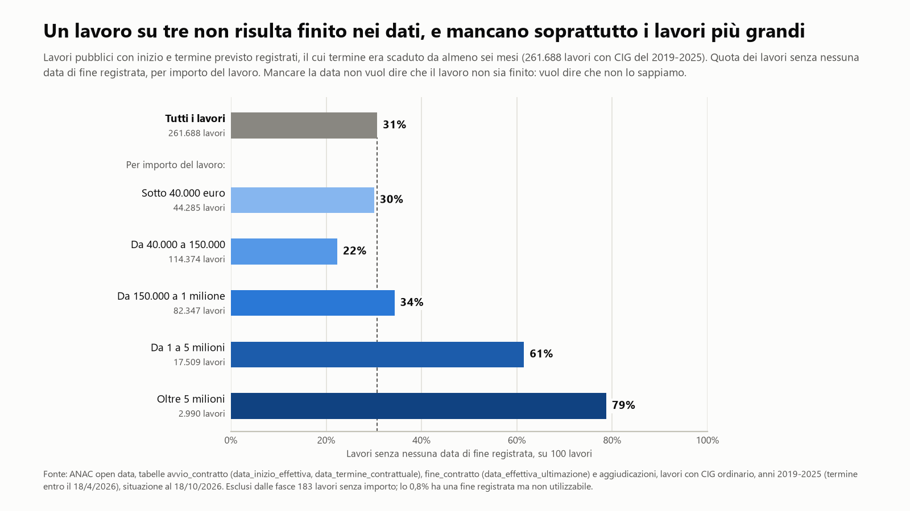
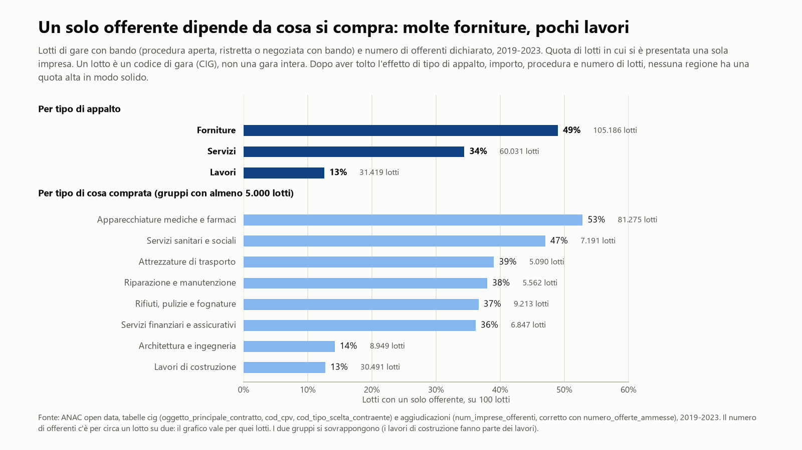
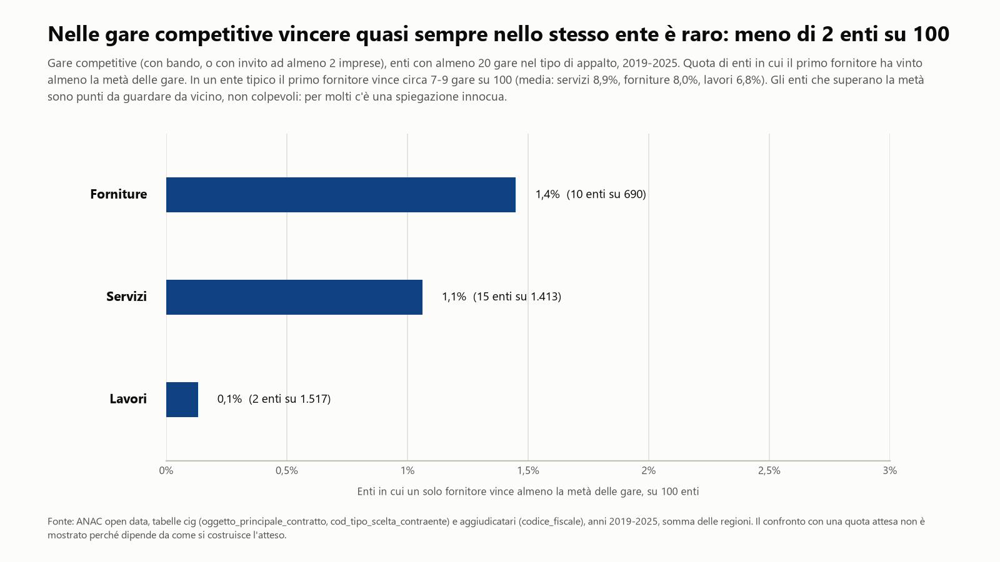

Appalti pubblici italiani 2019-2025: quattro schemi cercati nei dati aperti ANAC
Abbiamo letto 34,8 milioni di procedure di acquisto pubblico registrate da ANAC tra il 2019 e il 2025, cercando quattro schemi anomali.
Il risultato più solido è che gli importi si addensano subito sotto la soglia dell’affidamento diretto e la seguono quando la legge la sposta. Gli altri tre sono più sfumati: un lavoro su tre non risulta finito nei dati, i casi con un solo offerente dipendono da cosa si compra, e le imprese che vincono quasi sempre nello stesso ente sono poche.
Un’anomalia non è una prova: è un punto da approfondire sugli atti. Per ogni risultato diciamo quanto regge e quali spiegazioni innocue esistono.
Autore: Davide Caniatti · pubblicato il 15 novembre 2026 · dati ANAC scaricati il 18 ottobre 2026
Cosa abbiamo fatto e con quali dati
La fonte e i volumi. I dati vengono dal portale open data dell’Autorità nazionale anticorruzione (ANAC), con licenza CC BY-SA 4.0: 31 dataset in formato CSV, scaricati in blocco. Si parte da 34.803.052 procedure (34,8 milioni) del 2019-2025: 5.002.344 gare ordinarie e 29.800.708 acquisti piccoli. Ogni acquisto ha un CIG, il Codice identificativo di gara; in una gara divisa in parti, ogni parte (lotto) ha il suo. Lo smartcig è il CIG semplificato per gli acquisti sotto 40.000 euro: pochi campi e nessun esito. Vi si agganciano le tabelle degli esiti, degli enti e, per i lavori, di avvio e fine contratto, costi, varianti e sospensioni (elenco in appendice A).
Le quattro domande e il metodo.
- Gli importi si addensano sotto la soglia dell’affidamento diretto? Contiamo gli affidamenti negli ultimi 1.000 euro prima della soglia in vigore e li confrontiamo con quelli attesi guardando gli importi vicini, per ogni periodo di legge e mese per mese. Controllo: cifre tonde che non sono soglie.
- Quanti lavori finiscono con tempi e costi molto sopra il previsto? Confrontiamo il termine previsto con la fine registrata e l’importo aggiudicato con quello finale. Contiamo anche i lavori che non registrano la fine, altrimenti il quadro è falsato.
- Dove le gare hanno un solo offerente? Nelle gare con bando contiamo i lotti con un solo offerente dichiarato, per tipo di acquisto, importo, anno e regione, tenendo conto di cosa si compra e del numero di lotti.
- Ci sono imprese che vincono quasi sempre nello stesso ente? Per ogni coppia ente-impresa calcoliamo la quota di gare vinte; è «estrema» se è almeno metà, con almeno 10 vittorie e 20 gare dell’ente. Poi togliamo i casi con spiegazioni ovvie e contiamo una volta sola i lotti della stessa gara.
I controlli di qualità. Nessuna riga è stata cancellata: le righe sporche sono contate e segnalate. Il numero di righe lette coincide con quello dichiarato da ANAC in 132 file su 132. Tra i problemi: il 37,9% delle righe di aggiudicazioni ha un CIG fuori periodo; 33.993 importi sono a zero, 370 negativi, 344 sopra il miliardo; l’1,9% dei codici fiscali dei vincitori non supera il controllo.
La seconda verifica. Tutti i numeri chiave sono stati ricalcolati una seconda volta, con le interrogazioni riscritte da zero: i conti tornano quasi sempre (scarti sotto l’1%), i problemi erano nell’interpretazione. Sono stati corretti, per esempio, il picco a 40.000 euro (da 22,6 a circa 9 volte) e un presunto «buco» sopra la soglia che non esiste. Sono stati tolti i giudizi di «improbabilità» sulle coppie ente-impresa, i nomi di persone fisiche e i nomi legati a errori di dato.
Nomi. Gli enti pubblici sono nominati solo dove i numeri reggono, sempre con il contesto che li spiega. Le imprese private non sono nominate. Mai nomi di persone.
Un’appendice dedicata agli enti con sede a Milano è su milanoindati.it/appalti.
Risultato 1. Gli enti si adeguano alla soglia dell’affidamento diretto, e la seguono quando la legge la sposta
Appena sotto la soglia che permette di affidare senza gara ci sono molte più procedure di quante ne prevedano gli importi vicini, e il picco si sposta con la legge.


La legge consente l’affidamento diretto sotto una cifra che è cambiata più volte. Per servizi e forniture: 40.000 euro fino al 16 luglio 2020; 150.000 dal 17 luglio 2020; 75.000 dal 15 settembre 2020; 139.000 dal 1° giugno 2021; 140.000 dal 1° luglio 2023 (appendice B). Abbiamo contato gli affidamenti negli ultimi 1.000 euro sotto la soglia in vigore.
- Prima del 17 luglio 2020, servizi e forniture: 111.530 affidamenti tra 39.000 e 39.999 euro contro 11.872 attesi, cioè circa 9 volte (da 6,7 a 9,5 secondo il confronto).
- Dopo i cambi di legge: 5.466 sotto 75.000 contro 789 attesi (6,9 volte); 8.806 sotto 139.000 contro 1.162 (7,6); 21.307 sotto 140.000 contro 1.564 (13,6). Anche nei due mesi tra il 17 luglio e il 14 settembre 2020, quando la soglia era 150.000 euro per tutti, il picco compare sotto 150.000: 311 affidamenti di servizi e forniture contro 53 attesi (5,8 volte). Mese per mese, la quota sotto 75.000 passa da circa lo 0,2-0,3% a 1,2-2,2% a partire da settembre-ottobre 2020, subito dopo l’entrata in vigore della soglia; lo stesso succede nel giugno-luglio 2021 sotto 139.000 e nel luglio 2023 sotto 140.000.
- Non è la cifra tonda: sotto 30.000, 60.000 e 120.000 euro il rapporto resta tra 0,91 e 1,06. Prima di luglio 2020 il 77% degli affidamenti dell’ultimo intervallo è diretto, spesso con importi come 39.000 o 39.999 euro.
- Dopo il 2020 il picco a 39.999 resta (8,3 e 7,6 volte nel 2020-2023; 4,0 dal luglio 2023), anche perché 40.000 resta il limite degli smartcig. Pesano pochi enti sanitari: ESTAR, la centrale acquisti della sanità toscana, ha 3.312 importi a un euro dalla soglia in vigore (quasi tutti a 39.999 euro prima di luglio 2020), l’AUSL di Reggio Emilia 2.380, l’ASST di Vimercate 1.193 e l’AUSL di Piacenza 1.158. Contando tutti gli anni, gli importi a 39.999 euro sono circa 12.200 per ESTAR (circa 9.000 dopo luglio 2020), 6.000 per Reggio Emilia, 3.500 per Vimercate e 3.200 per Piacenza. Un’ipotesi, da verificare sugli atti, è che questi enti aprano codici con un importo «tetto» da cui poi fanno acquisti più piccoli.
- Dimensione: circa 153.000 affidamenti in eccesso (153.101, lo 0,44% dei 34.760.169 con importo valido), pari a circa 9,9 miliardi di euro di valore a base di gara. Non è spesa e non sono soldi sottratti alla concorrenza: è il valore nominale dei contratti in più.
Quanto regge
- Regge
- Il picco subito sotto la soglia in vigore (rapporti da 4 a 17) e il suo spostamento con la norma, con il controllo a 59.000 stabile: la prova più solida del progetto. Non dipende dalle cifre tonde.
- Regge in parte
- La grandezza del picco a 40.000: dipende dal confronto, perché lì l’archivio cambia (smartcig sotto, CIG ordinari sopra), e l’atteso è calcolato in modo diverso che alle altre soglie, quindi i rapporti non vanno messi in fila come se fossero la stessa misura. Il picco a 39.999 dopo il 2020 è un fatto, la sua interpretazione è debole. Gli enti con la quota più alta dipendono dal tipo di ente dedotto dal nome.
- Non regge
- Il «buco» sopra la soglia (rapporto 1,38: nessun calo). Il frazionamento: nel caso più stretto 12.111 gruppi in 3.391 enti, ma la quota non è più alta alla soglia vera che a cifre vicine. Le differenze tra regioni.
Spiegazioni innocue
- Stare sotto soglia è legale, e dal luglio 2020 al giugno 2023 la legge indicava l’affidamento diretto come la modalità da seguire sotto queste soglie.
- Gli importi sono stime iniziali, spesso tonde, non prezzi pagati; alcuni CIG potrebbero avere un «tetto» di 39.999 euro e poi spese molto più basse.
- Convenzioni, listini, accordi quadro e gare a lotti producono affidamenti simili senza essere frazionamenti. Emergenza 2020-2021 e cambio di sistema nel 2024.
Da approfondire. I pochi enti, soprattutto sanitari, che aprono migliaia di CIG a 39.999 euro: confrontare nei loro atti l’importo scritto sul CIG con quanto è stato pagato, che i dati ANAC non contengono.
Risultato 2. Un lavoro pubblico su tre non risulta finito nei dati, e mancano soprattutto i lavori più grandi
Tra i lavori con il termine scaduto da almeno sei mesi, il 31% non ha alcuna data di fine; la mancanza pesa soprattutto sui lavori sopra il milione di euro.

I CIG ordinari di lavori 2019-2025 sono 744.916. Per 181.372 conosciamo i tempi, per 149.363 il costo finale, per 126.737 entrambi.
- Chi non registra. Dei 261.688 lavori con termine scaduto da almeno sei mesi, 80.283 (30,7%) non hanno nessuna riga di fine, e solo lo 0,8% di questi ha un collaudo o un importo finale. La fine è registrata nel 77% dei lavori tra 40.000 e 150.000 euro, nel 37% tra 1 e 5 milioni, nel 20% sopra i 5 milioni.
- Chi registra. Il ritardo mediano è 1 giorno, ma il 50,3% finisce dopo il termine, il 34,4% supera di oltre la metà la durata prevista e il 5,7% ha più di un anno di ritardo. In orario è il 49,2% tra chi registra, tra il 33,7% e il 65,2% contando anche gli altri.
- Costi. Scostamento mediano 0,0%; il 22,1% supera il +10% e l’1,6% il +50%.
- Dove. Il ritardo cresce con l’importo (mediana 133 giorni da 1 a 5 milioni, 0 sotto i 150.000 euro). A parità di mix, contando anche chi non registra, restano sopra l’atteso per il tempo solo Sardegna, Umbria e Calabria.
- Casi estremi. Dei 30 maggiori scostamenti di costo in euro, 23 sono errori di inserimento o confronti non validi (cifre con zeri in più, accordi quadro), 5 non sono stati controllati, 1 è da verificare e 1 è un aumento di costo probabilmente reale, dovuto a tre varianti registrate (un lavoro PNRR del porto di Palermo, +34%). Non pubblichiamo gli altri nomi.
- Sospensioni. Le sospensioni registrate spiegano al massimo il 37% dei giorni di ritardo.
Quanto regge
- Regge
- Che molti lavori non registrino la fine, e siano diversi dagli altri (più grandi, più spesso con bando). Il ritardo che sale con l’importo. Il fatto che quasi tutti i maggiori aumenti di costo siano errori di cifre.
- Regge in parte
- La misura dei ritardi: vale per il 69% che registra, il termine può essere già prorogato e un lavoro su cinque scrive la fine uguale al termine. I costi: manca il finale per quattro lavori su cinque. Le regioni: solo tre reggono.
- Non regge
- Le classifiche di enti e imprese per nome: il 13% di enti con ritardo sopra l’atteso scende a circa 3,5% tenendo conto di regione e procedura. Il confronto tra anni sulla sola mediana: il 2024-2025 sembra migliore perché i lavori lunghi non sono finiti. Ogni lettura di colpa.
Spiegazioni innocue
- Sospensioni per maltempo o pandemia e proroghe per cause non imputabili all’impresa.
- Varianti legittime fino al 20% dell’importo (in certi casi 50%): gran parte dello scostamento oltre +10% è entro la legge.
- Termine già spostato, costo finale non aggiornato, accordi quadro non confrontabili importo contro importo, rincari dei materiali nel 2021-2022.
Da approfondire. I lavori sopra il milione di euro senza fine registrata: chiedere agli enti, con accesso agli atti, se sono conclusi, e verificare i certificati di collaudo.
Risultato 3. Le gare con un solo offerente dipendono da cosa si compra, non da dove
Nelle gare con bando 2019-2023 ha un solo offerente il 13% dei lotti di lavori, il 34% dei servizi e il 49% delle forniture.

Le gare con bando sono 586.004 CIG ordinari nel 2019-2025, ma solo 282.350 (48%) hanno il numero di offerenti. Restano fuori affidamenti diretti, adesioni a convenzioni e smartcig.
- Per settore (2019-2023, su 196.636 lotti con il dato): lavori 13%, servizi 34%, forniture 49%. Nelle gare con più di 20 lotti il dato sale al 54%, contro il 30% delle gare a lotto unico.
- Nel tempo, contando i lotti: 33% (2019), 30%, 40%, 42%, 44% (2023); stima 42% e 43% nel 2024-2025. Il salto 2020-2021 è per circa il 72% un cambio di composizione (più lotti di gare grandi). Contando ogni gara una volta sola, nel 2021-2023 è 32,4%, 34,1% e 32,2%: dal 2021 il livello è stabile.
- Correzione 2024-2025. In circa un lotto su dieci il numero di offerenti dichiarato è più basso delle offerte ammesse, il che è impossibile. Corretto, il 2024-2025 passa da 50% e 52% a 42,2% e 43,2%. Nel 2019-2023 invece l’elenco dei partecipanti contiene quasi solo i vincitori e non si può usare.
- Per regione. Tolto l’effetto di cosa si compra, importo e numero di lotti, nessuna regione ha una quota alta in modo solido.
- Per ente, tra quelli con almeno 600 lotti, le quote più alte sono di aziende sanitarie e di centrali acquisti per la sanità: Azienda sanitaria territoriale di Pesaro e Urbino 84% su 671 lotti; Azienda ospedaliera Città della Salute e della Scienza di Torino 81% su 991; Umbria Salute e Servizi 75% su 4.393. Il contesto: sono quasi tutti lotti di farmaci e dispositivi medici (83%, 91% e 97%), spesso in gare con più di 20 lotti (69%, 32% e 92%), dove un solo produttore per lotto è frequente. Per enti con lo stesso tipo di appalto, importi, procedura e numero di lotti ci si aspetterebbe il 54%, 43% e 57%. Sono quote instabili: Pesaro passa dal 94% nel 2019-2023 al 52% nel 2024-2025.
Quanto regge
- Regge
- La differenza tra lavori, servizi e forniture, che resta con ogni criterio alternativo; il peso dei lotti e delle centrali; l’assenza di regioni alte in modo solido.
- Regge in parte
- I livelli per anno: esatti, ma valgono per un lotto su due e per i lotti, non per le gare (per gara 25,8%-34,1%). La stima 2024-2025 è una nostra correzione, con qualche punto di incertezza; il 2019-2020 è meno certo. La classifica degli enti cambia da un periodo all’altro.
- Non regge
- La crescita tra 2021 e 2023: per lotto è +3,7 punti, ma con un intervallo da -2,2 a +9,0; per gara è -0,2.
Spiegazioni innocue
- Prodotti con un solo produttore (brevetto, compatibilità), soprattutto farmaci e apparecchiature mediche; lotti assegnati per produttore.
- Gare con molti lotti e centrali di committenza; gare piccole o tecniche; accordi quadro con più fornitori.
Per confronto, le gare finanziate dal PNRR hanno meno spesso un solo offerente (21% contro 45% nel 2022-2023).
Da approfondire. Nelle gare a molti lotti di centrali e aziende sanitarie, leggere negli atti perché alcuni lotti hanno avuto un solo offerente: un solo produttore o requisiti molto stretti. Per il 2024-2025, chiedere ad ANAC perché il numero di offerenti è incoerente in circa un caso su dieci.
Risultato 4. Imprese che vincono quasi sempre nello stesso ente: cercato, trovato poco
Nelle gare competitive vincere quasi sempre nello stesso ente è raro: succede in meno di 2 enti su 100.

Il perimetro sono 3.472.282 CIG con almeno un vincitore valido, di cui 484.172 in procedure competitive: gare con bando e procedure negoziate con almeno 2 imprese invitate o offerenti. «Competitiva» quindi non vuol dire sempre molta concorrenza: a volte le imprese invitate sono solo due.
- Le coppie estreme, calcolate dentro ogni categoria di prodotto, sono 70 nelle procedure competitive e 751 negli affidamenti diretti (più 193 in adesioni ad accordi quadro). Per 63 delle 70 competitive c’è almeno una spiegazione innocua; per 22 la maggior parte delle vittorie viene da gare con un solo offerente, tema del Risultato 3 più che dell’ente.
- Conta come si contano le vittorie. Contando una volta sola i lotti della stessa gara e gli ordini dello stesso accordo quadro, le estreme scendono da 70 a 26 e da 751 a 318: molte «centinaia di vittorie» sono una sola gara con tanti lotti.
- Cosa resta. Senza spiegazioni trovate dai controlli automatici restano 4 coppie competitive (2 con gare a offerente unico) e 107 dirette, per lo più del 2024-2025, quando entrano nei dati acquisti piccoli (importo mediano 15.000 euro): gite scolastiche, carburante, piccoli lavori comunali.
- I due casi competitivi rimasti, guardati da vicino, hanno una spiegazione visibile nei dati. Un distributore di gas ha comprato contatori elettronici del gas in procedure negoziate, nel 2019-2023: un produttore ha vinto 29 dei 50 lotti con esito (58%, 5,3 milioni di euro), un secondo produttore 19 e un terzo 2; nella maggior parte dei lotti le offerte erano due. È un mercato con pochissimi produttori, e 22 lotti su 72 non hanno un vincitore registrato. Nel secondo caso una cooperativa sociale ha vinto 19 dei 35 lotti con esito di una città metropolitana per assistenza all’autonomia e trasporto di studenti con disabilità (16 gare distinte, 26,6 milioni di euro): erano in gran parte procedure aperte, e 11 delle 19 vittorie sono arrivate in gare con 6-12 offerenti. Qui la concentrazione nasce da gare contese, non da gare senza concorrenza. Per questo non indichiamo i nomi.
Quanto regge
- Regge
- Il quadro generale: il primo fornitore vince in media il 7-9% delle gare e solo in circa un ente su cento arriva a metà. La seconda verifica conta di poco diversamente gli enti, ma conclude lo stesso. Regge anche che pesi più di tutto il modo di contare (da 70 a 26).
- Regge in parte
- Il numero delle coppie estreme: vuol dire solo «almeno metà delle gare, con 10 vittorie e 20 gare dell’ente». L’elenco dei casi senza spiegazione dipende da ciò che i controlli automatici riescono a vedere: guardano le spiegazioni come accordi quadro o un solo offerente, ma non vedono i mercati con due o tre produttori né le vittorie in gare con molti concorrenti, come mostrano i due casi rimasti.
- Non regge
- Il 59% di coppie «improbabili» e le probabilità «1 su un miliardo» della prima versione: misuravano la severità del modello, non l’anomalia degli enti. Sono state tolte.
Spiegazioni innocue
- Contratti derivati da accordi quadro o convenzioni; contratti continuativi (carburante, manutenzioni, noleggi); società in house o partecipate.
- Gare a molti lotti o con un solo offerente; mercati con due o tre produttori; vittorie in gare aperte con molti concorrenti; cooperative sociali con lotti riservati; enti piccoli o isolati; unico operatore sul territorio.
Da approfondire. Per le coppie che restano senza spiegazione, soprattutto i 107 affidamenti diretti ricorrenti del 2024-2025, gli atti possono dire se c’erano lotti riservati e quante imprese erano state invitate: informazioni che i dati ANAC non contengono.
Limiti che valgono per tutto
- Esiti mancanti. Nel 2019-2023 solo il 46-55% dei CIG ordinari ha un esito (87-91% nel 2024-2025); la fine dei lavori c’è nel 43-49% dei casi nel 2019-2021 e nel 14-18% nel 2024-2025. Le analisi valgono per la parte che ha i dati.
- Il cambio di sistema nel 2024. Il numero di offerenti è vuoto per l’88% delle righe 2024 e il 90% del 2025; la data di pubblicazione è spesso molto più tarda della procedura; entrano molti acquisti piccoli. I confronti 2023-2024 non sono alla pari.
- Tipo di ente dedotto dal nome. Le colonne ANAC che indicherebbero società in house e partecipate sono sempre «false», e la natura giuridica registrata è troppo generica. Qualche errore di classificazione è certo.
- Date delle procedure approssimate. La legge guarda la data in cui la procedura è avviata, che nei dati non c’è: i conteggi usano la scadenza delle offerte, la pubblicazione o la comunicazione. Qualche affidamento a cavallo di un cambio di soglia può finire nel periodo sbagliato.
- «Nessuna variante» non si distingue da «non comunicata». Vale per tutti i lavori.
- L’unità di conto è il lotto (CIG), non la gara, nei Risultati 1, 3 e 4. Le date non sono allineate tra i risultati. L’importo è la stima a base di gara, non la spesa.
Tabelle e codice. Tabelle e codice delle analisi sono disponibili su richiesta, scrivendo dalla pagina dei contatti.
Appendice A. I dataset ANAC usati
Righe nel file finale, dopo aver tenuto per ogni chiave la versione più recente. Nessuna riga è stata cancellata: quelle sostituite sono conservate a parte.
| Dataset (tabella) | Righe | Anni |
|---|---|---|
cig (gare ordinarie; una riga per codice CPV, 5.002.344 CIG) | 5.039.241 | 2019-2025, un file per mese |
smartcig (acquisti piccoli) | 29.800.708 | 2019-2025, un file per mese |
aggiudicazioni | 6.333.590 | tutti gli anni* |
aggiudicatari | 6.978.946 | tutti gli anni* |
partecipanti | 9.458.416 | tutti gli anni* |
avvio_contratto | 2.507.222 | tutti gli anni* |
fine_contratto | 1.297.316 | tutti gli anni* |
quadro_economico | 6.919.807 | tutti gli anni* |
varianti | 363.210 | tutti gli anni* |
sospensioni | 250.670 | tutti gli anni* |
stati_avanzamento | 1.569.432 | tutti gli anni* |
collaudo | 730.531 | tutti gli anni* |
categorie_opera | 13.421.312 | tutti gli anni* |
pubblicazioni | 12.582.629 | tutti gli anni* |
subappalti | 509.637 | tutti gli anni* |
stazioni_appaltanti | 48.040 | anagrafica, senza anno |
dec_tipo_scelta_contraente (decodifica) | 47 | - |
dec_modalita_realizzazione (decodifica) | 23 | - |
dec_tipo_fattispecie_contrattuale (decodifica) | 77 | - |
* File completo più sette aggiornamenti mensili (da aprile a ottobre 2026); l’anno di una riga è quello del CIG a cui si riferisce. Non è stato scaricato il 2026 di cig e smartcig: circa 0,9 milioni di CIG presenti negli esiti sono del 2026.
Appendice B. Le soglie dell’affidamento diretto
Importi in euro, al netto dell’IVA (dedotto dai dati). Soglia sotto la quale è consentito l’affidamento diretto.
| Periodo | Date | Lavori | Servizi e forniture | Norma |
|---|---|---|---|---|
| 1 | fino al 16/07/2020 | 40.000 | 40.000 | d.lgs. 50/2016, art. 36, c. 2, lett. a) |
| 2 | 17/07/2020 - 14/09/2020 | 150.000 | 150.000 | d.l. 76/2020, art. 1, c. 2, lett. a), testo originario |
| 2 | 15/09/2020 - 31/05/2021 | 150.000 | 75.000 | d.l. 76/2020, art. 1, c. 2, lett. a), come modificato dalla legge di conversione 120/2020 |
| 3 | 01/06/2021 - 30/06/2023 | 150.000 | 139.000 | d.l. 76/2020, art. 1, c. 2, lett. a), come modificato dall’art. 51 del d.l. 77/2021 (procedure avviate dal 1° giugno 2021) |
| 4 | dal 01/07/2023 | 150.000 | 140.000 | d.lgs. 36/2023, art. 50, c. 1, lett. a) e b) |
Testi consultati su Normattiva. Il d.lgs. 36/2023 è in vigore dal 1° aprile 2023 ma le sue disposizioni hanno efficacia dal 1° luglio 2023 (art. 229). Nei conteggi i due mesi dal 17 luglio al 14 settembre 2020 sono un periodo a sé. Altre soglie guardate come confronto: 5.000; 1.000.000 per i lavori; soglie europee.